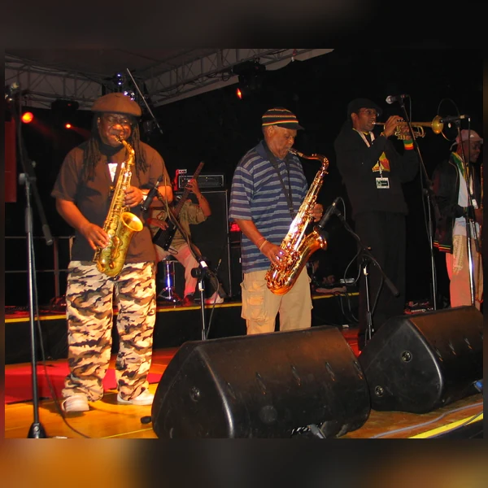
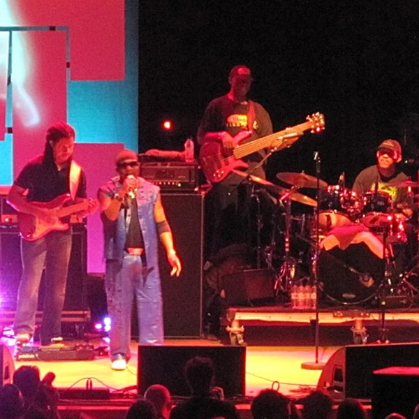
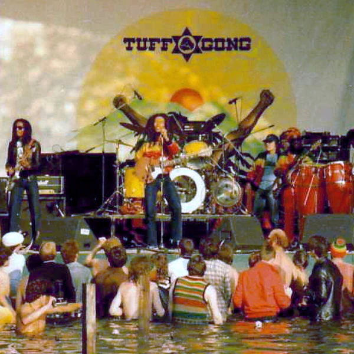
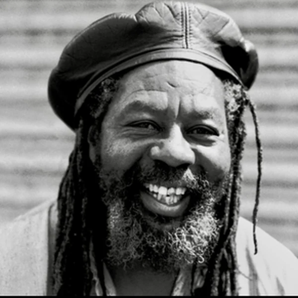
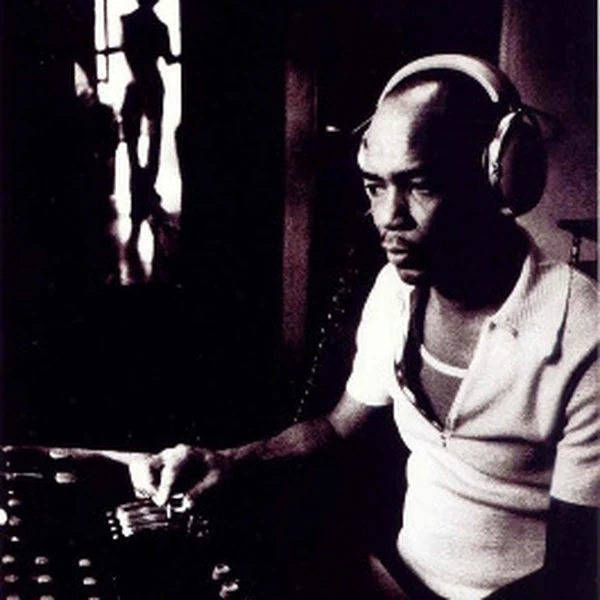
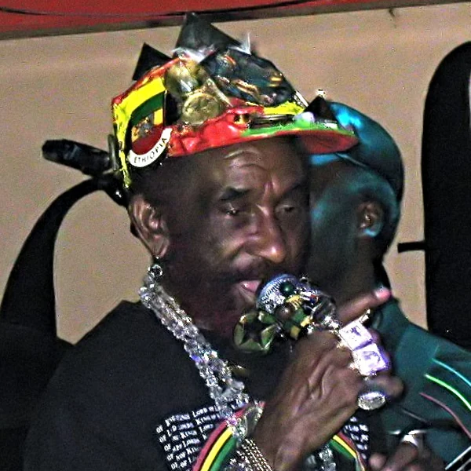
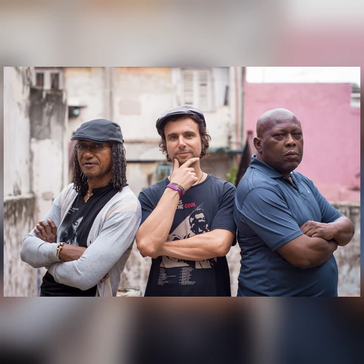
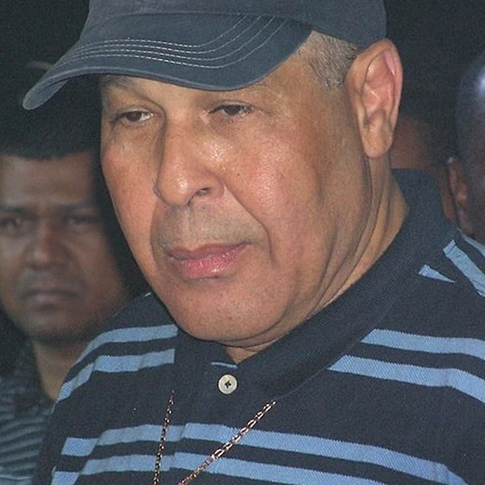

Reggae is a style of Jamaican popular music that developed in the late 1960s from earlier forms such as Ska and Rocksteady. Its most recognisable features are a prominent bassline and a rhythm that often places emphasis between the main beats. That combination gives Reggae a steady pulse without making it sound rigid. The music grew through Jamaica's studios and sound system culture, where records were played for dancing and producers were constantly trying new ways to make a rhythm stand out. Some Reggae is mainly concerned with everyday life and relationships, while other branches speak directly about inequality and political change. Rastafari has been especially influential in Roots Reggae, although the genre is not tied to any single religion or message. It became internationally popular during the 1970s and has continued to develop in different settings. Reggae is now heard around the world, but its musical language and much of its cultural significance still lead back to Jamaica.
The word Reggae became established in Jamaican music during the late 1960s, just as a new sound was emerging from Rocksteady. Its exact origin remains uncertain. Some explanations connect it to Jamaican slang, including expressions suggesting roughness or disorder, but none has settled the question. What is clearer is how quickly the word became useful. Jamaican popular music had been changing at a remarkable pace, and listeners needed names that could distinguish the latest rhythms from what came before. Reggae was soon being used for music with a different bass and drum emphasis, even though the boundary with Rocksteady was not always sharp. As the genre reached international audiences, the label expanded to cover several related approaches. The name is now familiar enough to seem as though it must have had an obvious meaning from the beginning. Music history is rarely that obliging.
Reggae developed within the Jamaican sound system culture that expanded during the 1950s and 1960s. DJs played records at dances, while studios produced new music for audiences who expected the sound to keep changing. Ska had brought American R&B influences together with local musical traditions, and Rocksteady slowed the pace during the middle of the 1960s. By the end of that decade, a new rhythmic approach was being called Reggae. During the 1970s, Roots Reggae became closely associated with Rastafari and with lyrics addressing poverty, colonial history and political struggle. At the same time, producers working with Dub began treating the recording studio as a creative instrument, stripping arrangements back and rebuilding them with echo and other effects. Related styles later developed in different directions, including Dancehall. Jamaican migration also helped establish Reggae communities abroad, particularly in Britain. These developments were connected, but the music did not follow a single path, and Jamaica remained an active centre of innovation rather than simply the place where it had all begun.
Reggae is often recognised by the way its rhythm works around the beat rather than landing heavily on every count. Short guitar or keyboard chords commonly fall on the offbeats, while the bass plays a much more prominent role than a listener might expect from conventional Rock. A bassline can carry much of the melody, leaving the other instruments room to respond. Drummers sometimes use a one drop pattern, with particular emphasis later in the bar instead of a strong hit at the beginning, although Reggae has several rhythmic approaches. The tempo is often relaxed, but that should not be mistaken for a lack of rhythmic detail. Small changes in timing make a noticeable difference to the groove. Vocals may be sung or delivered in a more speech based style, often drawing on Jamaican Creole as well as English. Studio production matters too, especially in Dub, where producers reshape familiar rhythms through mixing and effects. Reggae leaves enough space in its arrangements for these details to be heard.








Reggae gave many Jamaicans a public voice at a time when independence had not removed the inequalities inherited from colonial rule. Much of its early audience came from communities whose experiences were rarely reflected in official accounts of national life. Roots Reggae brought questions of poverty, racial injustice and African identity into popular music, with Rastafari providing an important source of ideas. That did not mean every Reggae musician shared the same politics or faith. The genre also made space for music about daily life and for dancing, which has always been part of its culture. As Reggae spread abroad, it influenced new musical scenes and helped connect Caribbean communities with wider audiences. Its political messages travelled with it, although international success did not necessarily improve conditions for the people who developed the sound. Reggae was recognised by UNESCO as part of humanity's intangible cultural heritage in 2018. The recognition matters, but it is worth remembering that the music was speaking for marginalised communities long before international institutions decided it was culturally important.